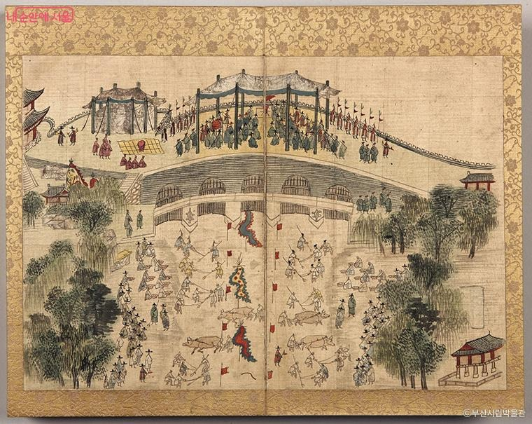
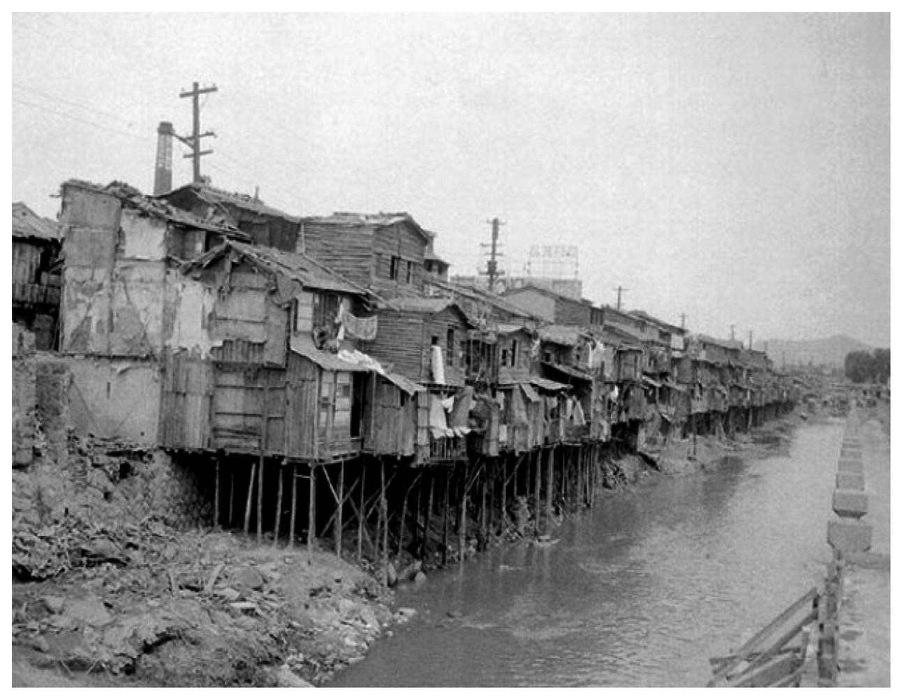
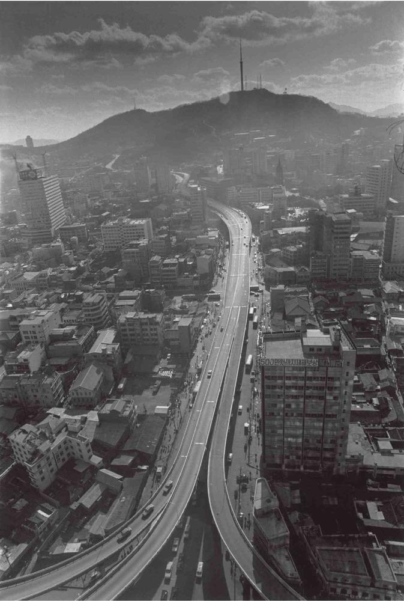
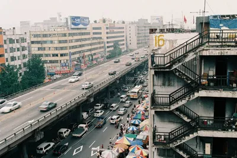
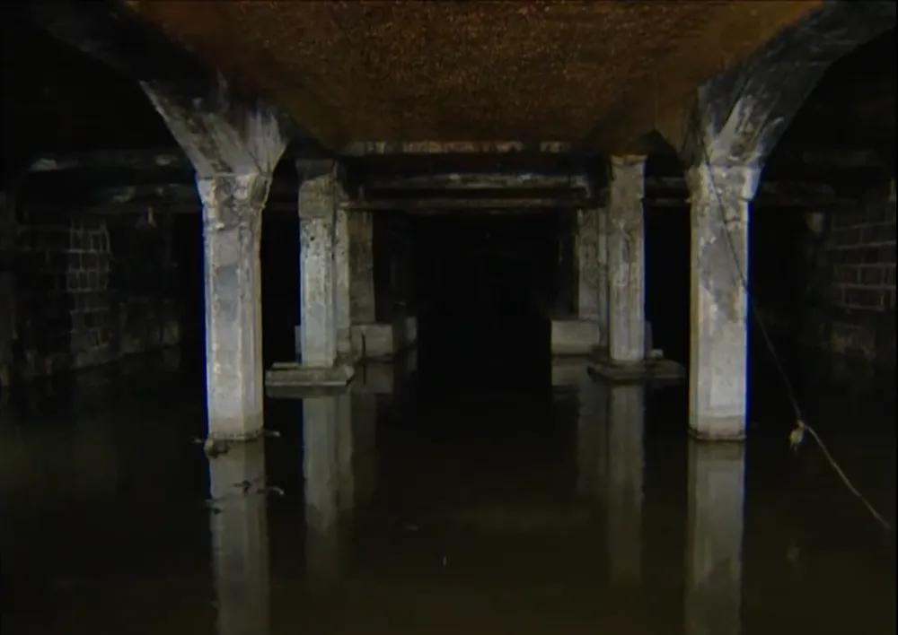
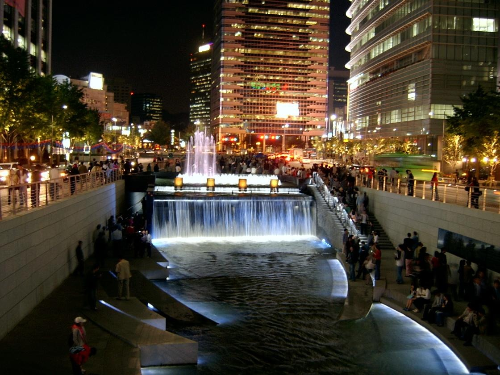
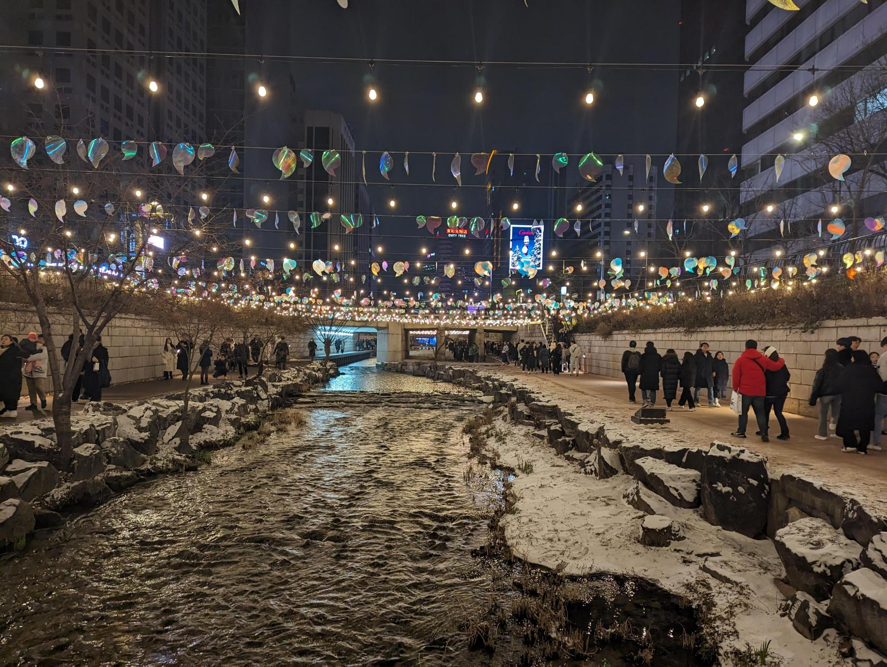

The Cheonggyecheon restoration project is one of the most successful urban restoration efforts in modern times. What used to be an open sewage stream has been turned into an urban amenity that benefits local residents and a popular destination for visitors.
Cheonggyecheon is a stream that flows west to east, starting at Inwangsan Mountain through the center of downtown Seoul. Eventually the stream empties into the Han River, which is the main river that cuts through Seoul. This stream was useful as a water source for the city but was also prone to flooding.
During the Joseon period in the 14th century, the stream underwent its first restoration project with updated dredging and embankments to reduce the dangers of flooding.

After the initial restoration project, the amount of maintenance done on Cheonggyecheon would vary by monarchs. By the early 1900s, the stream was in a bad state due to lack of maintenance and flooding damage.
During the Japanese occupation of Korea, there was interest in covering up the stream but insufficient funds were available so only small parts were covered. After the Korean war and devastation of Seoul, Cheonggyecheon developed a large slum community. In the rainy seasons, shacks along the stream would be destroyed and trash would flow into the stream.

During the 1960s, the government decided to cover the stream with a large road. In the 70s, the Cheonggyecheon Expressway was built. In the span of 20 years, the area transformed from a shanty town to an expressway with urban development. During post-war development, the primary focus was on economic progress and not much consideration was given to the environmental impact of covering the stream with concrete.
See the initial opening of the expressway here.


However, the construction of the expressway and road over the stream resulted in smell of mold aboveground due to the polluted waters, additional air pollution from traffic, and significant deterioration of the structural support. Apparently, there was an event where participants could enter the basement of the road, but they were required to wear masks due to the smell and pollution.

In 2003, the mayor of Seoul, Lee Myung-bak, decided to remove the expressway and restore the stream as an urban park. At the time, some people believed that the expressway was essential to business and economic activity. There were protests from street vendors and criticism. Despite this, the final Cheonggyecheon restoration was finished in 2005 with a very positive reception.

Within a few years, residents felt the positive impact of the project as temperatures around Cheonggyecheon were often 5 to 10 degrees Fahrenheit cooler than other areas in Seoul. Additionally, car pollution and congestion decreased while transit usage improved after the restoration.
The project also improved pedestrian access, public space, and biodiversity along the stream. With the new community space, events like the Seoul Lantern Festival and other public events are held at Cheonggyecheon.

While there were doubts about the final restoration project of Cheonggyecheon, the government was able to successfully remove the expressway and build a place where people want to be. Now, it serves as a real-world example of how to create better places for people in cities where highways dominate the cityscape.